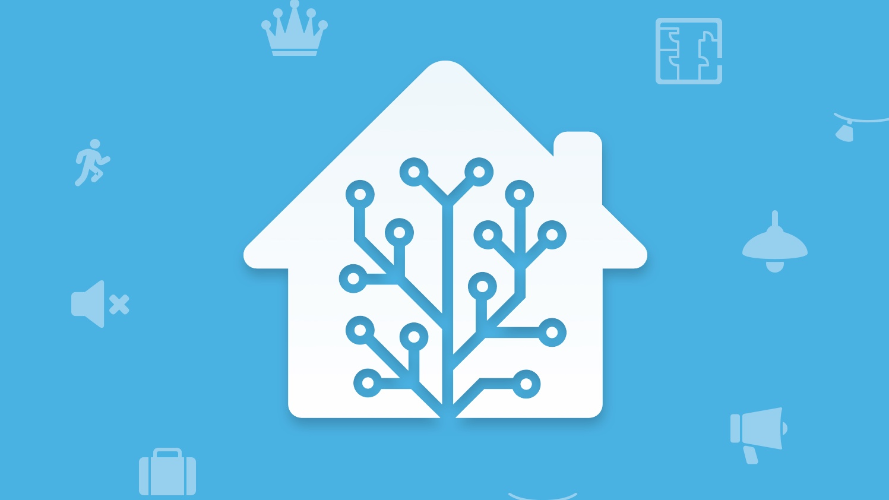

初期規劃與準備
在這開始規劃這次的自主學習計畫前，我已經對於物聯網有一定的瞭解，且有實際經驗，在家中有佈置了一些智慧家庭裝置，當時也為了避免踩坑，嘗試去了解物聯網的運作方式，像是不同設備的功能、不同的連線方式、支持的操作系統。
除了基礎知識，這次的主題是「Home Assistant 智慧家居平台」，所以必須要有物聯網裝置在這個平台上運作，好在我已經有了一些基礎裝置。另外，還需要一台 Windows 電腦，以及路由器，用於平台的搭建。（本來想用樹莓派作為智慧家居平台的載體，但樹莓派在太貴了（T_T）

網路配置
物聯網裝置需要有穩定的網路環境，因為它們需要連接到互聯網才能正常工作。如果網路不穩定或中斷，物聯網裝置就無法與其他裝置通信，也就無法正常執行自動化指令或提供監控和遙控功能。
此外，物聯網裝置需要持續與互聯網連接，以便能夠接收最新的軟體更新和數據。如果網路環境不穩定，物聯網裝置可能無法及時更新軟體，導致安全漏洞和功能缺失。
為了確保物聯網裝置能夠正常工作，建議使用高頻寬、支持多天線收發的路由器或無線收發器（例如支持 Wi-Fi 6、6E 的路由器），並確保所有物聯網裝置都在同一區域網內。